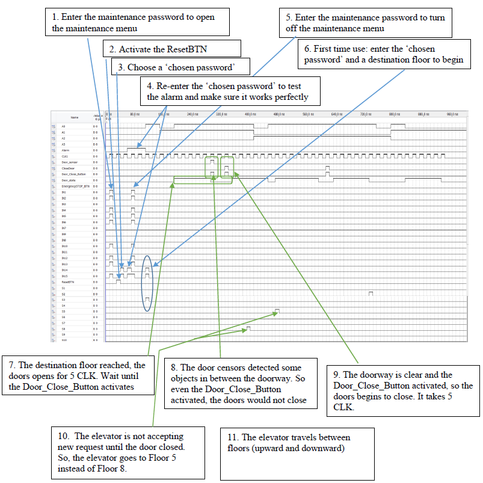

Portfoio Details - Passenger Elevator with Quartus
- Home
- Portfoio Details
- Category: Award, Competition
- Software/Hardware: Quartus, FPGA, DE0-CycloneV, Waveform Simulation
- Complete date: May 05, 2020
- Award Honorable Mention for Digital Logic Design in Junior Design Competition in Spring 2020, UNLV
Simulation Result:

Circuit operation:
- BCD representation: A0 – A3
- Alarm: Logical 1 is active, logical 0 is not active
- CLK: the input signal that controls the logic of the sequential part of the system
- Door_sensor: Logical 0 indicate the doorway is clear. Logical 1 indicate the door sensor detected object(s) between the doorway
- Door_Close_Button: Logical 1 is active, logical 0 is not active
- EmergencySTOP_BTN: Logical 1 is active, logical 0 is not active
- Password input: IN1 – IN15
- ResetBTN: Logical 1 is active, logical 0 is not active/li>
- Floor selection: S1 – S10
Procedure to start the Passenger Elevator:
- 1. Enter the maintenance password to login to the maintenance menu (to change the ‘chosen password’)
- 2. Click the ResetBTN and then choose a ‘chosen password’
- 3. Enter the maintenance password again to exit the maintenance menu
- 4. Enter the ‘chosen password’ and a desired floor to begin the journey.
Description
- The Passenger Elevator with Quartus is designed to move people safely between floors in Quartus and verify its operation using waveform stimulation. It provides the basic functionality of an elevator with safety and security features.
- The Passenger Elevator utilizes combinational logic, counter, 4-bit binary comparator, and flip flops to implement the functionality of the elevator. Several combinational logics are used to implement the censors and the basic functionality of the elevator. It includes converting the floor selection buttons to the corresponding binary form. An array of flip flops to memorize the destination floor and a chosen password, comparison between current and the destination floor, and 4-bit counter. The use of counters to increase/decrease the floor level and open/close doors for exactly 5 clock cycles. It also used symbol files to simplify the representation of logic gates.
Basic functionality:
- • Operates on 10 floors (S1-S10)
- • Travel between floors with the speed of two clock cycles
- • One destination floor request is allowed
- • The floor buttons and the door button have no effects when the elevator is in motion
- • The current floor represents in BCD form and in 7-segment display
- • When the destination floor reached, the doors open automatically
- • The doors require passengers to close with the Close button
- • Takes five clock cycles to open the doors
- • Takes five clock cycles to close the doors
- • Elevator stores the state of doors on output Door_state
Security Features:
- • Special Procedure to start the Passenger Elevator. Prohibit unauthorized access to use the elevator.
- • Two password implementations
- • May use to only allows a limited number of a person to use the elevator
- • Provide limited access for the one who has the ‘chosen password’
- • Prohibit unauthorized person to work on maintenance or restart the elevator
Safety Features:
- • Emergency Button to Stop the elevator instantly and active the alarm
- • Door sensors to detect objects between elevator doors when closing. It would not close the doors until the doorway is clear